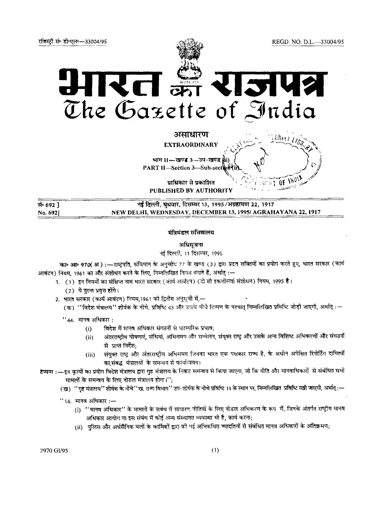
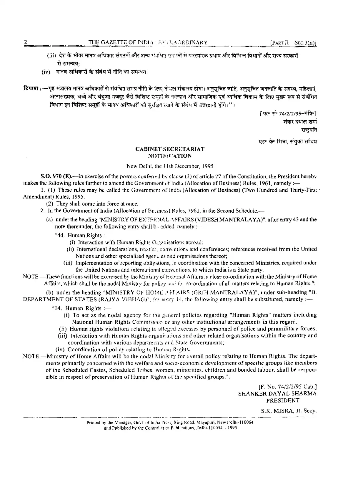

Amendment #231 (S.O. 970(E), 1995)
2 changes: 0 to the First Schedule, 2 to the Second Schedule. 1 applied1 not applied
The order, page by page
Page 1 of 2

Page 2 of 2

12after Schedule 2 › MINISTRY OF EXTERNAL AFFAIRS › entry 43
- 44. Human Rights:
- i. Interaction with Human Rights Organisations abroad:
- ii. International declarations, treaties, conventions and conferences; references received from the United Nations and other specialised agencies and organisations thereof
- iii. Implementation of reporting obligations, in coordination with the concerned Ministries, required under the United Nations and international conventions, to which India is a State party.
- NOTE. These functions will be exercised by the Ministry of External Affairs in close co-ordination with the Ministry of Home Affairs, which shall be the nodal Ministry for policy and for co-ordination of all matters relating to Human Rights.
applied at schedule 2 › ministry MINISTRY OF EXTERNAL AFFAIRS › entry 44 in the Rules after #231
Schedule 2 › MINISTRY OF HOME AFFAIRS › DEPARTMENT OF STATES › entry 14
- 14. Human Rights -
- i. To act as the nodal agency for the general policies regarding "Human Rights" matters including National Human Rights Commission or any other institutional arrangements in this regard
- ii. Human rights violations relating to alleged excesses by personnel of police and paramilitary forces
- iii. Interaction with Human Rights organisations and other related organisations within the country and coordination with various departments and State Governments
- iv. Coordination of policy relating to Human Rights.
- NOTE. Ministry of Home Affairs will be the nodal Ministry for overall policy relating to Human Rights. The departments primarily concerned with the welfare and socio-economic development of specific groups like members of the Scheduled Castes, Scheduled Tribes, women, minorities, children and…
not applied (the change could not be placed in the Rules as read; see How this document was read)
How this document was read
Known issues
| Change | Issue | Known as |
|---|---|---|
| 2 | change 2: no entry 14 under schedule 2 › ministry MINISTRY OF HOME AFFAIRS › department B | Entries not in the state |
From the Government of India (Allocation of Business) Rules, 1961 and their amendments, as published by the Cabinet Secretariat (cabsec.gov.in), read by orgpedia. The readings of the older scanned gazettes have known gaps.